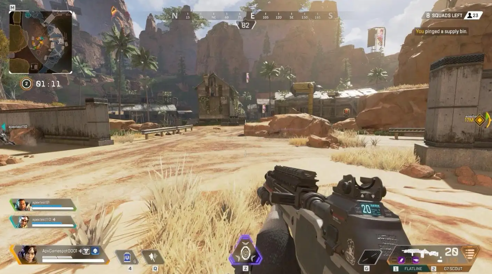

-
宠物
宠物(pet)指人们为了精神目的，而不是为了经济目的而豢养的生物。传统的宠物是指哺乳纲或鸟纲的动物，养着用于玩赏和作伴。实际生活中的宠物包括鱼纲、爬行纲、两栖纲、昆虫，甚至植物，用于观赏、作伴、舒缓人们的精神压力。
-
足球
追剧就是每天在电视或电脑旁算好时间掐着表守电视剧开播的行为。有各种追剧列表或者追剧公众号实现追剧功能。追剧也作为一种戏称，泛指单纯的看剧。
-
电子游戏
提高视觉空间技能和开发想象力。有些游戏设置在3D的虚拟空间中，里面没有现实社会中GPS或者其它导航的应用来帮忙。玩这类电子游戏的孩子有机会锻炼自己的视觉空间能力，对距离和方向的感觉好。
-
旅游
不同的世界，带给你快乐和幸福。如果你不走出去，你以为世界就这么大；如果你不走进别样的领域，你就以为世界上的人都过着和你一样的生活。走出去，别样的风光，别样的世界，会为你封闭已久的心灵打开一扇窗，让你的世界豁然开朗，你会在看风景、品美食、住宾馆、赏民俗、听故事的种种过程中体验日常生活中体验不到的快乐。